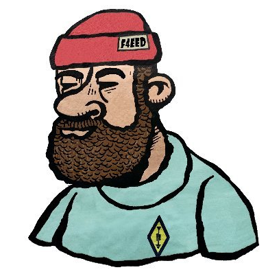

Fichiers locaux : GeoJSON (.geojson, .json), KML, KMZ. Analyse 100 % hors ligne dans le navigateur.
Les imports sont conservés pour la session du navigateur (rechargement de page OK ; fermeture de l'onglet = perte). Limite ~4 Mo au total.
Clic droit sur la carte pour ajouter ou modifier un élément. Cochez le calque ci-dessous pour l'affichage.
Clic droit sur la carte pour ajouter ou modifier un constat. Cochez le calque ci-dessous pour l'affichage.

Trait plein = signal direct · trait pointillé = signal arrière